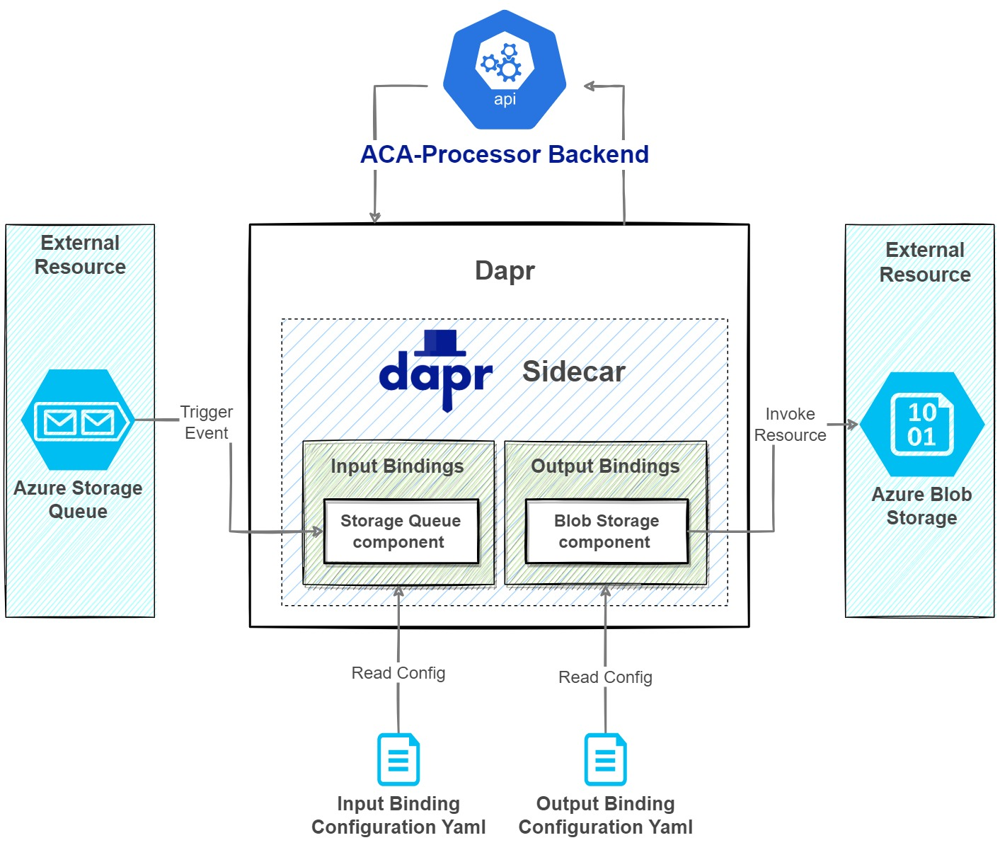

Module 6 - ACA with Dapr Bindings Building Block¶
Module Duration
90 minutes
In this module we are going to extend the backend background processor service (ACA-Processor Backend) to interface with an external system which is outside our Tasks Tracker microservice application.
To achieve this in a simple way we will utilize Dapr Input and Output Bindings.
The external system owns an Azure Storage Queue which the Tasks Tracker microservice application reacts to through an event handler (aka Input Binding) that receives and processes the message coming to the storage queue. Once the processing of the message completes and stores the task into Cosmos DB, the system will trigger an event (aka Output binding) that invokes the external service which in turn stores the content of the message into an Azure Blob Storage container. Here it is important to emphasize that both the Azure Storage Queue and the Azure Storage Blob belong to the external system.
The rest of this module will implement the three scenarios mentioned below:
- Trigger a process on the
ACA-Processor Backendbased on a message sent to a specific Azure Storage Queue. This scenario will assume that the Azure Storage Queue is an external system to which external clients can submit tasks. - From the service
ACA-Processor Backendwe will invoke an external resource that stores the content of the incoming task from the external queue as a JSON blob file on Azure Storage Blobs. - Remove the SendGrid SDK as well as the custom code created in the previous module to send emails and replace it with Dapr SendGrid output binding.
Take a look at the high-level architecture diagram below to understand the flow of input and output bindings in Dapr:

Note
Those 3rd party external services could be a services hosted on another cloud provider, different Azure subscription or even on premise. Dapr bindings are usually used to trigger an application with events coming in from external systems as well as interface with external systems.
For simplicity of the workshop we are going to host those two supposedly external services in the same subscription of our Tasks Tracker microservice application.
If you look at Dapr Bindings Building Block, you will notice a lot of similarities with the Pub/Sub Building Block that we covered in the previous module. But remember that Pub/Sub Building Block is meant to be used for Async communication between services within your solution. The Binding Building Block has a wider scope and it mainly focuses on connectivity and interoperability across different systems, disparate applications, and services outside the boundaries of your own application. For a full list of supported bindings visit this link.
Overview of Dapr Bindings Building Block¶
Let's take a look at the detailed Dapr Binding Building Block architecture diagram that we are going to implement in this module to fulfill the use case we discussed earlier: 
{kind=link}
Looking at the diagram we notice the following:
- In order to receive events and data from the external resource (Azure Storage Queue) our
ACA-Processor Backendservice needs to register a public endpoint that will become an event handler. - This binding configuration between the external resource and our service will be configured by using the
Input Binding Configuration yamlfile. The Dapr sidecar of the background service will read the configuration and subscribe to the endpoint defined for the external resource. In our case, it will be a specific Azure Storage Queue. - When a message is published to the storage queue, the input binding component running in the Dapr sidecar picks it up and triggers the event.
- The Dapr sidecar invokes the endpoint (event handler defined in the
ACA-Processor BackendService) configured for the binding. In our case, it will be an endpoint that can be reached by invoking aPOSToperationhttp://localhost:3502/ExternalTasksProcessor/Processand the request body content will be the JSON payload of the published message to the Azure Storage Queue. - When the event is handled in our
ACA-Processor Backendand the business logic is completed, this endpoint needs to return an HTTP response with a200 okstatus to acknowledge that processing is complete. If the event handling is not completed or there is an error, this endpoint should return HTTP 400 or 500 status code. - In order to enable the service
ACA-Processor Backendto trigger an event that invokes an external resource, we need to use theOutput Binding Configuration Yamlfile to configure the binding between our service and the external resource (Azure Blob Storage) and how to connect to it. - Once the Dapr sidecar reads the binding configuration file, our service can trigger an event that invokes the output binding API on the Dapr sidecar. In our case, the event will be creating a new blob file containing the content of the message we read earlier from the Azure Storage Queue.
- With this in place, our service
ACA-Processor Backendwill be ready to invoke the external resource by sending a POST operation to the endpointhttp://localhost:3502/v1.0/bindings/ExternalTasksBlobstoreand the JSON payload will contain the content below. Alternatively, we can use the Dapr client SDK to invoke this output biding to invoke the external service and store the file in Azure Blob Storage.
{
"data": "{
"taskName": "Task Coming from External System",
"taskAssignedTo": "user1@hotmail.com",
"taskCreatedBy": "tjoudeh@bitoftech.net",
"taskDueDate": "2022-08-19T12:45:22.0983978Z"
}",
"operation": "create"
}
To proceed with this workshop we need to provision the Azure Storage Account to start responding to messages published to a queue and then later use the same storage account to store blob files as an external event. Run the PowerShell script below to create Azure Storage Account and get the master key.
Tip
We will be retrieving the storage account key for local dev testing purposes. Note that the command below will return two keys. You will only need one of them for this exercise. When deploying the changes to ACA, we are going to store the storage key securely into Azure Key Vault using Dapr Secrets Store Building Block with AKV.
We didn't use Azure Manged Identity here because the assumption is that those services are not part of our solution and thus they could theoretically be a non AD compliant services or hosted on another cloud. If these services where part of your application's ecosystem it is always recommended that you use Azure Managed Identity.
$STORAGE_ACCOUNT_NAME = "<replace with a globally unique storage name.The field can contain only lowercase letters and numbers. Name must be between 3 and 24 characters.>"
az storage account create `
--name $STORAGE_ACCOUNT_NAME `
--resource-group $RESOURCE_GROUP `
--location $LOCATION `
--sku Standard_LRS `
--kind StorageV2
# list azure storage keys
az storage account keys list -g $RESOURCE_GROUP -n $STORAGE_ACCOUNT_NAME
Updating the Backend Background Processor Project¶
1. Create an event handler (API endpoint) to respond to messages published to Azure Storage Queue¶
Let's add an endpoint that will be responsible to handle the event when a message is published to Azure Storage Queue. This endpoint will start receiving the message published from the external service.
Start by adding a new controller Controllers folder under the TasksTracker.Processor.Backend.Svc project:
using Dapr.Client;
using Microsoft.AspNetCore.Mvc;
using TasksTracker.Processor.Backend.Svc.Models;
namespace TasksTracker.Processor.Backend.Svc.Controllers
{
[Route("ExternalTasksProcessor")]
[ApiController]
public class ExternalTasksProcessorController : ControllerBase
{
private readonly ILogger<ExternalTasksProcessorController> _logger;
private readonly DaprClient _daprClient;
public ExternalTasksProcessorController(ILogger<ExternalTasksProcessorController> logger,
DaprClient daprClient)
{
_logger = logger;
_daprClient = daprClient;
}
[HttpPost("process")]
public async Task<IActionResult> ProcessTaskAndStore([FromBody] TaskModel taskModel)
{
try
{
_logger.LogInformation("Started processing external task message from storage queue. Task Name: '{0}'", taskModel.TaskName);
taskModel.TaskId = Guid.NewGuid();
taskModel.TaskCreatedOn = DateTime.UtcNow;
//Dapr SideCar Invocation (save task to a state store)
await _daprClient.InvokeMethodAsync(HttpMethod.Post, "tasksmanager-backend-api", $"api/tasks", taskModel);
_logger.LogInformation("Saved external task to the state store successfully. Task name: '{0}', Task Id: '{1}'", taskModel.TaskName, taskModel.TaskId);
//ToDo: code to invoke external binding and store queue message content into blob file in Azure storage
return Ok();
}
catch (Exception)
{
throw;
}
}
}
}
Curious to know more about the code?
-
We defined an action method named
ProcessTaskAndStorewhich can be accessed by sending HTTP POST operation on the endpointExternalTasksProcessor/Process. -
This action method accepts the TaskModel in the request body as JSON payload.This is what will be received from the external service (Azure Storage Queue).
-
Within this action method, we are going to store the received task by sending a POST request to
/api/taskswhich is part of the backend api namedtasksmanager-backend-api. -
Then we return
200 OKto acknowledge that message received is processed successfully and should be removed from the external service queue.
2. Create Dapr Input Binding Component File¶
Now we need to create the component configuration file which will describe the configuration as well as how our backend background processor will start handling events coming from the external service (Azure Storage Queues). To do so, add a new file under components folder.
apiVersion: dapr.io/v1alpha1
kind: Component
metadata:
name: externaltasksmanager
spec:
type: bindings.azure.storagequeues
version: v1
metadata:
- name: storageAccount
value: "<Your Storage Account Name>"
- name: storageAccessKey
value: "<Your Storage Account Key>"
- name: queue
value: "external-tasks-queue"
- name: decodeBase64
value: "true"
- name: route
value: /externaltasksprocessor/process
Curious to learn more about the specification of yaml file?
The full specifications of yaml file with Azure Storage Queues can be found on this link, but let's go over the configuration we have added here:
- The type of binding is
bindings.azure.storagequeues. - The name of this input binding is
externaltasksmanager. - We are setting the
storageAccountname,storageAccessKeyvalue, and thequeuename. Those properties will describe how the event handler we added can connect to the external service. You can create any queue you prefer on the Azure Storage Account we created to simulate an external system. - We are setting the
routeproperty to the value/externaltasksprocessor/processwhich is the address of the endpoint we have just added so POST requests are sent to this endpoint. - We are setting the property
decodeBase64totrueas the message queued in the Azure Storage Queue is Base64 encoded.
Note
The value of the Metadata storageAccessKey is used as plain text here for local dev scenario. We will see how we are going to store this key
securely in Azure Key Vault and use Dapr Secrets Store API to read the access key.
3. Create Dapr Output Binding Component File¶
Now we need to create the component configuration file which will describe the configuration and how our service ACA-Processor Backend will be able to invoke the external service (Azure Blob Storage)
and be able to create and store a JSON blob file that contains the content of the message received from Azure Storage Queues.
To do so, add a new file folder components.
apiVersion: dapr.io/v1alpha1
kind: Component
metadata:
name: externaltasksblobstore
spec:
type: bindings.azure.blobstorage
version: v1
metadata:
- name: storageAccount
value: "<Your Storage Account Name>"
- name: storageAccessKey
value: "<Your Storage Account Key>"
- name: container
value: "externaltaskscontainer"
- name: decodeBase64
value: false
Curious to learn more about the specification of yaml file?
The full specifications of yaml file with Azure blob storage can be found on this link, but let's go over the configuration we have added here:
- The type of binding is
bindings.azure.blobstorage. - The name of this output binding is
externaltasksblobstore. We will use this name when we use the Dapr SDK to trigger the output binding. - We are setting the
storageAccountname,storageAccessKeyvalue, and thecontainername. Those properties will describe how our backend background service will be able to connect to the external service and create a blob file. We will assume that there is a container already created on the external service and namedexternaltaskscontaineras shown in the image below
{kind=link}
- We are setting the property
decodeBase64tofalseas we don’t want to encode file content to base64 images, we need to store the file content as is.
5. Use Dapr client SDK to Invoke the Output Binding¶
Now we need to invoke the output binding by using the .NET SDK.
Update and replace the code in the file with the code below. Pay close attention to the updated ProcessTaskAndStore action method:
using Dapr.Client;
using Microsoft.AspNetCore.Mvc;
using TasksTracker.Processor.Backend.Svc.Models;
namespace TasksTracker.Processor.Backend.Svc.Controllers
{
[Route("ExternalTasksProcessor")]
[ApiController]
public class ExternalTasksProcessorController : ControllerBase
{
private readonly ILogger<ExternalTasksProcessorController> _logger;
private readonly DaprClient _daprClient;
private const string OUTPUT_BINDING_NAME = "externaltasksblobstore";
private const string OUTPUT_BINDING_OPERATION = "create";
public ExternalTasksProcessorController(ILogger<ExternalTasksProcessorController> logger,
DaprClient daprClient)
{
_logger = logger;
_daprClient = daprClient;
}
[HttpPost("process")]
public async Task<IActionResult> ProcessTaskAndStore([FromBody] TaskModel taskModel)
{
try
{
_logger.LogInformation("Started processing external task message from storage queue. Task Name: '{0}'", taskModel.TaskName);
taskModel.TaskId = Guid.NewGuid();
taskModel.TaskCreatedOn = DateTime.UtcNow;
//Dapr SideCar Invocation (save task to a state store)
await _daprClient.InvokeMethodAsync(HttpMethod.Post, "tasksmanager-backend-api", $"api/tasks", taskModel);
_logger.LogInformation("Saved external task to the state store successfully. Task name: '{0}', Task Id: '{1}'", taskModel.TaskName, taskModel.TaskId);
//code to invoke external binding and store queue message content into blob file in Azure storage
IReadOnlyDictionary<string,string> metaData = new Dictionary<string, string>()
{
{ "blobName", $"{taskModel.TaskId}.json" },
};
await _daprClient.InvokeBindingAsync(OUTPUT_BINDING_NAME, OUTPUT_BINDING_OPERATION, taskModel, metaData);
_logger.LogInformation("Invoked output binding '{0}' for external task. Task name: '{1}', Task Id: '{2}'", OUTPUT_BINDING_NAME, taskModel.TaskName, taskModel.TaskId);
return Ok();
}
catch (Exception)
{
throw;
}
}
}
}
Curious to know more about the code?
Looking at the ProcessTaskAndStore action method above, you will see that we are calling the method InvokeBindingAsync and we are passing the binding name externaltasksblobstore
defined in the configuration file, as well the second parameter create which is the action we need to carry against the external blob storage.
You can for example delete or get a content of a certain file. For a full list of supported actions on Azure Blob Storage, visit this link.
Notice how are setting the file name we are storing at the external service. We need the file names to be created using the same Task Identifier, so we will pass the key blobName with the file name values
into the metaData dictionary.
6. Test Dapr Bindings Locally¶
Now we are ready to give it an end-to-end test on our dev machines. Run the 3 applications together using Debug and Run button from VS Code. You can read how we configured the 3 apps to run together in this section.
Open Azure Storage Explorer on your local machine. If you don't have it installed you can install it from here.
Login to your Azure Subscription and navigate to the storage account already created, create a queue, and use the same name you already used in the Dapr Input configuration file.
In our case the name of the queue in the configuration file is external-tasks-queue.

The content of the message that Azure Storage Queue excepts should be as below, so try to queue a new message using the tool as the image below:
{
"taskName": "Task from External System",
"taskAssignedTo": "user1@hotmail.com",
"taskCreatedBy": "tjoudeh@bitoftech.net",
"taskDueDate": "2022-08-19T12:45:22.0983978Z"
}

If all is configured successfully you should be able to see a JSON file created as a blob in the Azure Storage Container named externaltaskscontainer based on your configuration.
{kind=link}
Use Dapr SendGrid Output Bindings¶
In the previous module we've seen how we are sending notification emails when a task is assigned to a user by installing the SendGrid SDK NuGet package and writing some custom code to trigger sending emails. Dapr Can simplify this process by using the Dapr SendGrid Output binding component.
So let's see how we can simplify this and by replacing the external SendGrid SDK with dapr output binding.
1. Create Dapr SendGrid Output Binding Component file¶
We need to create the component configuration file which will describe the configuration and how our service ACA-Processor Backend will be able to invoke SendGrid service and notify the task owner by email.
Add a new file under the components folder as shown below:
apiVersion: dapr.io/v1alpha1
kind: Component
metadata:
name: sendgrid
spec:
type: bindings.twilio.sendgrid
version: v1
metadata:
- name: emailFrom
value: "<Your email which was white listed with SendGrid when you obtained the API Key>"
- name: emailFromName
value: "Tasks Tracker Notification"
- name: apiKey
value: "<Send Grid API Key>"
Curious to learn more about the specification of yaml file?
The full specifications of yaml file with SendGrid binding can be found on this link, but let's go over the configuration we have added here:
- The type of binding is
bindings.twilio.sendgrid. - The name of this output binding is
sendgrid. We will use this name when we use the Dapr SDK to trigger the output binding. - We are setting the metadata
emailFrom,emailFromName, and theapiKey. Those properties will describe how our backend background service will be able to connect to SendGrid API and send the email.
2. Remove SendGrid package reference¶
- Update file TasksTracker.Processor.Backend.Svc.csproj and remove the NuGet package reference PackageReference Include="SendGrid" Version="9.28.1". With the introduction of Dapr SendGrid Output bindings there is no need to include the external SDKs.
3. Update SendEmail Code to Use Output Bindings Instead of SendGrid SDK¶
Now we need to invoke the SendGrid output binding by using the Dapr .NET SDK. Replace the content of the TasksNotifierController.cs file with the code below. Also its very important that you open the appsettings.json file and set the IntegrationEnabled to false to avoid sending any emails. This is important as we don't want to send several emails later on when simulate high load in module 9 while demonstrating autoscaling with KEDA.
using Dapr.Client;
using Microsoft.AspNetCore.Http;
using Microsoft.AspNetCore.Mvc;
using TasksTracker.Processor.Backend.Svc.Models;
namespace TasksTracker.Processor.Backend.Svc.Controllers
{
[Route("api/tasksnotifier")]
[ApiController]
public class TasksNotifierController : ControllerBase
{
private readonly IConfiguration _config;
private readonly ILogger _logger;
private readonly DaprClient _daprClient;
public TasksNotifierController(IConfiguration config, ILogger<TasksNotifierController> logger, DaprClient daprClient)
{
_config = config;
_logger = logger;
_daprClient = daprClient;
}
[Dapr.Topic("dapr-pubsub-servicebus", "tasksavedtopic")]
[HttpPost("tasksaved")]
public async Task<IActionResult> TaskSaved([FromBody] TaskModel taskModel)
{
_logger.LogInformation("Started processing message with Task Name '{0}'", taskModel.TaskName);
var sendGridResponse = await SendEmail(taskModel);
if (sendGridResponse)
{
return Ok();
}
return BadRequest("Failed to send an email");
}
private async Task<bool> SendEmail(TaskModel taskModel)
{
var integrationEnabled = _config.GetValue<bool>("SendGrid:IntegrationEnabled");
var sendEmailResponse = true;
var subject = $"Task '{taskModel.TaskName}' is assigned to you!";
var plainTextContent = $"Task '{taskModel.TaskName}' is assigned to you. Task should be completed by the end of: {taskModel.TaskDueDate.ToString("dd/MM/yyyy")}";
try
{
//Send actual email using Dapr SendGrid Outbound Binding (Disabled when running load test)
if (integrationEnabled)
{
IReadOnlyDictionary<string, string> metaData = new Dictionary<string, string>()
{
{ "emailTo", taskModel.TaskAssignedTo },
{ "emailToName", taskModel.TaskAssignedTo },
{ "subject", subject }
};
await _daprClient.InvokeBindingAsync("sendgrid", "create", plainTextContent, metaData);
}
else
{
//Introduce artificial delay to slow down message processing
_logger.LogInformation("Simulate slow processing for email sending for Email with Email subject '{0}' Email to: '{1}'", subject, taskModel.TaskAssignedTo);
Thread.Sleep(1000);
}
if (sendEmailResponse)
{
_logger.LogInformation("Email with subject '{0}' sent to: '{1}' successfully", subject, taskModel.TaskAssignedTo);
}
}
catch (System.Exception ex)
{
sendEmailResponse = false;
_logger.LogError(ex, "Failed to send email with subject '{0}' To: '{1}'.", subject, taskModel.TaskAssignedTo);
throw;
}
return sendEmailResponse;
}
}
}
Note
Even though we restored the code to send emails it won't actually trigger sending emails as we set the IntegrationEnabled flag to false. Also notice that we introduced a Thread.Sleep(1000) statement. This will come in handy in module 9 where it will be used to simulate artificial delay within the ACA-Processor Backend service to demonstrate autoscaling with KEDA.
Curious to learn more about the code above?
You will see that we calling the method InvokeBindingAsync() and we are passing the binding name sendgrid defined in the configuration file,
as well the second parameter create which is the action we need to carry to trigger email sending using SendGrid.
For a full list of supported actions on SendGrid outbound binding spec, visit this link.
Notice how are setting the recipient, display name, and email subject by passing the setting the keys emailTo, emailToName, and subject into the metaData dictionary.
Configure Dapr Secret Store Component with Azure Key Vault¶
Currently, we have 3 Dapr components which are not Azure AD enabled services. As you may have noticed so far, the different component files are storing sensitive keys to access the different external services. The recommended approach for retrieving these secrets is to reference an existing Dapr secret store component that securely accesses the secrets.
We need Create a Dapr secret store component using the Container Apps schema. The Dapr secret store will be configured with Azure Key Vault secret store.
1. Create an Azure Key Vault resource¶
Create an Azure Key Vault which will be used to store securely any secret or key used in our application.
$KEYVAULTNAME = "<your akv name. Should be globally unique.
Vault name must only contain alphanumeric characters and dashes and cannot start with a number.>"
az keyvault create `
--name $KEYVAULTNAME `
--resource-group $RESOURCE_GROUP `
--enable-rbac-authorization true `
--location $LOCATION
Note
It is important to create the Azure Key Vault with Azure RBAC for authorization by setting --enable-rbac-authorization true because the role we are going to assign to the Azure AD
application will work only when RBAC authorization is enabled.
2. Grant Backend Processor App a Role To Read Secrets from Azure Key Vault¶
In the previous module we have configured the system-assigned identity for the service ACA-Processor Backend. Now we need to assign a role named Key Vault Secrets User to it, so it access and read
secrets from Azure Key Vault.
You can read more about Azure built-in roles for Key Vault data plane operations.
$KV_SECRETSUSER_ROLEID = "4633458b-17de-408a-b874-0445c86b69e6" # ID for 'Key Vault Secrets User' Role
$subscriptionID= az account show --query id -o tsv
# Get PRINCIPALID of BACKEND Processor Service
$BACKEND_SVC_PRINCIPALID = az containerapp show `
-n $BACKEND_SVC_NAME `
-g $RESOURCE_GROUP `
--query identity.principalId
az role assignment create `
--role $KV_SECRETSUSER_ROLEID `
--assignee $BACKEND_SVC_PRINCIPALID `
--scope "/subscriptions/$subscriptionID/resourcegroups/$RESOURCE_GROUP/providers/Microsoft.KeyVault/vaults/$KEYVAULTNAME"
3. Create Secrets in the Azure Key Vault¶
To create a secret in Azure Key Vault you need to have a role which allows you to create secrets. From the Azure CLI we will assign the role Key Vault Secrets Officer to the user signed in to AZ CLI to
be able to create secrets. To do so use the script below:
$SIGNEDIN_UERID = az ad signed-in-user show --query id
$KV_SECRETSOFFICER_ROLEID = "b86a8fe4-44ce-4948-aee5-eccb2c155cd7" #ID for 'Key Vault Secrets Office' Role
az role assignment create --role $KV_SECRETSOFFICER_ROLEID `
--assignee $SIGNEDIN_UERID `
--scope "/subscriptions/$subscriptionID/resourcegroups/$RESOURCE_GROUP/providers/Microsoft.KeyVault/vaults/$KEYVAULTNAME"
Now we will create 2 secrets in the Azure Key Vault using the commands below:
# Set SendGrid API Key as a secret named 'sendgrid-api-key'
az keyvault secret set `
--vault-name $KEYVAULTNAME `
--name "sendgrid-api-key" `
--value "<Send Grid API Key>.leave this empty if you opted not to register with the sendgrip api"
# Set External Azure Storage Access Key as a secret named 'external-azure-storage-key'
az keyvault secret set `
--vault-name $KEYVAULTNAME `
--name "external-azure-storage-key" `
--value "<Your Storage Account Key>"
4. Create a ACA Dapr Secrets Store Component file¶
Create a new yaml file under the aca-components folder.
Curious to learn more about the yaml file?
- We didn't specify the component name
secretstoreakvin the metadata of the this component yaml file. We are going to specify it once we add this dapr component to Azure Container Apps Environment via CLI similar to what we did in earlier modules. - We are not referencing any service bus connection strings as the authentication between Dapr and Azure Service Bus will be configured using Managed Identities.
- The metadata
vaultNamevalue is set to the name of the Azure Key Vault we've just created. - We are allowing this component only to be accessed by the dapr with application id
tasksmanager-backend-processor. This means that our Backend API or Frontend Web App services will not be able to access the Dapr secret store. If we want to allow them to access the secrets we need to update this component file and grant the system-identity of those services aKey Vault Secrets Userrole.
5. Create Input and Output Binding Component Files Matching Azure Container Apps Specs¶
Add new files under the aca-components use the yaml below:
componentType: bindings.azure.storagequeues
version: v1
secretStoreComponent: "secretstoreakv"
metadata:
- name: storageAccount
value: "<Your Storage Account Name>"
- name: storageAccessKey
secretRef: external-azure-storage-key
- name: queue
value: "external-tasks-queue"
- name: decodeBase64
value: "true"
- name: route
value: /externaltasksprocessor/process
scopes:
- tasksmanager-backend-processor
Curious to learn more about the yaml file?
The properties of this file are matching the ones used in Dapr component-specific file. It is a component of type bindings.azure.storagequeues.
The only differences are the following:
- We are setting the property
secretStoreComponentvalue tosecretstoreakvwhich is the name of Dapr secret store component. - We are using
secretRefwhen setting the metadatastorageAccessKey. The valueexternal-azure-storage-keyrepresents the AKV secret created earlier.
componentType: bindings.azure.blobstorage
version: v1
secretStoreComponent: "secretstoreakv"
metadata:
- name: storageAccount
value: "<Your Storage Account Name>"
- name: storageAccessKey
secretRef: external-azure-storage-key
- name: container
value: "externaltaskscontainer"
- name: decodeBase64
value: "false"
- name: publicAccessLevel
value: "none"
scopes:
- tasksmanager-backend-processor
Curious to learn more about the yaml file?
The properties of this file are matching the ones used in Dapr component-specific file. It is a component of type bindings.azure.blobstorage.
The only differences are the following:
- We are setting the property
secretStoreComponentvalue tosecretstoreakvwhich is the name of Dapr secret store component. - We are using
secretRefwhen setting the metadatastorageAccessKey. The valueexternal-azure-storage-keyrepresents the AKV secret created earlier
6. Create SendGrid Output Binding Component File Matching Azure Container Apps Specs¶
Add a new file under the aca-components use the yaml below:
Curious to learn more about the yaml file?
The properties of this file are similar to the previous ones. The difference is that the metadata 'apiKey' value is set to sendgrid-api-key which is
the name of the secret in AKV that holds SendGrid API key.
With those changes in place, we are ready to rebuild the backend background processor container image, update Azure Container Apps Env, and redeploy a new revision.
Deploy a New Revision of the Backend Background Processor App to ACA¶
1. Build the Backend Background Processor Image and Push it To ACR¶
As we have done previously we need to build and deploy the Backend Background Processor image to ACR, so it is ready to be deployed to ACA. Continue using the same PowerShell console and paste the code below (make sure you are under the TasksTracker.ContainerApps directory):
az acr build --registry $ACR_NAME --image "tasksmanager/$BACKEND_SVC_NAME" --file 'TasksTracker.Processor.Backend.Svc/Dockerfile' .
2. Add Dapr Secret Store Component to ACA Environment¶
We need to run the command below to create the Dapr secret store component:
az containerapp env dapr-component set `
--name $ENVIRONMENT --resource-group $RESOURCE_GROUP `
--dapr-component-name secretstoreakv `
--yaml '.\aca-components\containerapps-secretstore-kv.yaml'
3. Add three Bindings Dapr Components to ACA Environment¶
Next, we will add create the three Dapr bindings components using the component files created.
Important
At the time of producing this workshop, executing the commands below was throwing an error due an issue on the CLI when trying to create
a component file which contains reference to a secretStoreComponent via CLI.
You can attempt to execute these commands but if the error still persists at the time you are consuming this workshop you can create the 3 components from the Azure Portal as shown below.
##Input binding component for Azure Storage Queue
az containerapp env dapr-component set `
--name $ENVIRONMENT --resource-group $RESOURCE_GROUP `
--dapr-component-name externaltasksmanager `
--yaml '.\aca-components\containerapps-bindings-in-storagequeue.yaml'
##Output binding component for Azure Blob Storage
az containerapp env dapr-component set `
--name $ENVIRONMENT --resource-group $RESOURCE_GROUP `
--dapr-component-name externaltasksblobstore `
--yaml '.\aca-components\containerapps-bindings-out-blobstorage.yaml'
##Output binding component for SendGrid
az containerapp env dapr-component set `
--name $ENVIRONMENT --resource-group $RESOURCE_GROUP `
--dapr-component-name sendgrid `
--yaml '.\aca-components\containerapps-bindings-out-sendgrid.yaml'
CLI issue still exits?
From Azure Portal, navigate to your Container Apps Environment, select Dapr Components, then click on Add component, and provide the values of the component as shown in the image below.
Note
Image shown is for externaltasksmanager and you can do the other 2 components (externaltasksblobstore and sendgrid) using the values in the yaml file for each component.
{kind=link}
4. Deploy new revisions of the Backend Background Processor to ACA¶
Update the Azure Container App hosting the Backend Background Processor with a new revision so our code changes are available for end users.
Tip
Notice how we are removing the environments variable named SendGrid__ApiKey as we are reading the key value from Dapr secret store.
## Update Backend Background Processor container app and create a new revision
az containerapp update `
--name $BACKEND_SVC_NAME `
--resource-group $RESOURCE_GROUP `
--revision-suffix v20230224-1 `
--remove-env-vars "SendGrid__ApiKey"
5. Remove SendGrid Secret from the Backend Background Processor App¶
Remove the secret stored in Secrets of the Backend Background Processor as this secret is not used anymore.
Info
You can skip executing the powershell script below if you opted not to set up a sendgrid account in module 5
az containerapp secret remove --name $BACKEND_SVC_NAME `
--resource-group $RESOURCE_GROUP `
--secret-names "sendgrid-apikey"
Success
With those changes in place and deployed, from the Azure Portal you can open the log streams section of the container app hosting the ACA-Processor-Backend and check the logs generated after queuing a
message into Azure Storage Queue (using Azure Storage Explorer tool used earlier) as an external system.
{
"taskName": "Task from External System",
"taskAssignedTo": "user42@hotmail.com",
"taskCreatedBy": "tjoudeh@bitoftech.net",
"taskDueDate": "2022-08-19T12:45:22.0983978Z"
}
You should receive logs similar to the below:
{kind=link}
In the next module, we will cover a special type of Dapr input binding named Cron Binding.